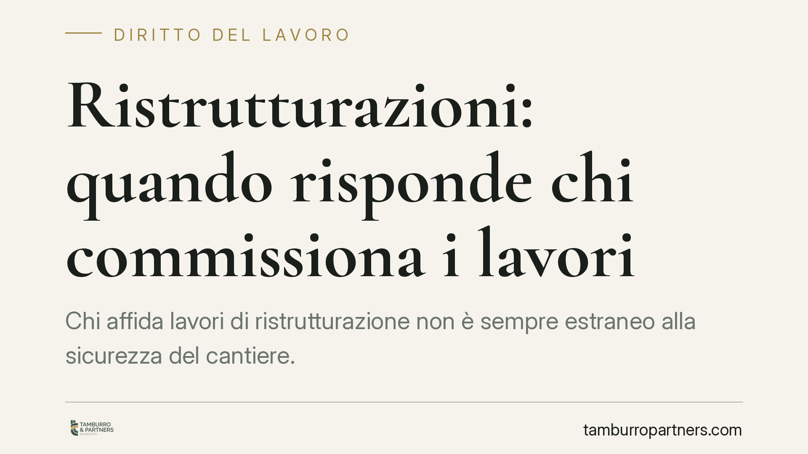

Ristrutturazioni: quando risponde chi commissiona i lavori
Chi affida lavori di ristrutturazione non è sempre estraneo alla sicurezza del cantiere. La giurisprudenza di legittimità riconosce che il committente può rispondere degli infortuni quando gestisce o incide sul rischio, ad esempio fornendo attrezzature inadeguate. L'etichetta di lavoratore autonomo non basta a escludere la responsabilità. Ecco gli obblighi e i confini applicabili.

Il caso: attrezzatura inadeguata e caduta dell'operaio
La questione ricorrente nella prassi è netta: un operaio cade durante lavori di ristrutturazione e si discute se il committente — cioè chi ha commissionato l'intervento — debba rispondere, pur trattandosi di un lavoratore formalmente autonomo.
La risposta della giurisprudenza penale non è meccanica. Il committente non è un garante automatico della sicurezza altrui. Diventa però responsabile quando, con la propria condotta, incide concretamente sul rischio: ad esempio mettendo a disposizione un ponteggio, una scala o un macchinario inadeguato che causa l'infortunio. In quel caso l'obbligo di sicurezza si radica sulla gestione effettiva del pericolo, non sulla qualifica contrattuale del lavoratore.
Inquadramento normativo: due ambiti da non confondere
Il D.Lgs. 81/2008 (Testo Unico sulla sicurezza) disciplina la posizione del committente in due contesti distinti, che è essenziale tenere separati.
Contratti d'appalto e d'opera fuori dai cantieri (art. 26). Quando il committente affida lavori all'interno della propria azienda o unità produttiva, l'art. 26 impone la verifica dell'idoneità tecnico-professionale dell'impresa o del lavoratore autonomo, l'informazione sui rischi specifici e la cooperazione nella prevenzione, con redazione del DUVRI (Documento Unico di Valutazione dei Rischi da Interferenze) quando ricorrono rischi interferenziali.
Cantieri temporanei o mobili (Titolo IV, artt. 88 e ss.). Se i lavori configurano un cantiere edile — come tipicamente accade nelle ristrutturazioni — si applica il Titolo IV. L'art. 90 pone in capo al committente (o al responsabile dei lavori) obblighi specifici: verifica dell'idoneità tecnico-professionale delle imprese, richiesta del DURC (Documento Unico di Regolarità Contributiva) e, in presenza di più imprese, nomina del coordinatore per la progettazione e per l'esecuzione.
La nomina del coordinatore e le verifiche connesse operano quindi nell'ambito dei cantieri del Titolo IV, non negli appalti retti dall'art. 26. Sovrapporre i due regimi è un errore che espone a valutazioni sbagliate sugli adempimenti dovuti.
La ratio: conta la gestione del rischio, non l'etichetta
Il principio che regge la responsabilità del committente è la posizione di garanzia fondata sul controllo effettivo del pericolo. Se il committente fornisce mezzi o attrezzature, organizza spazi, impartisce direttive che incidono sulle modalità esecutive, allora concorre nella creazione o nel mancato governo del rischio.
Da qui la rilevanza della culpa in eligendo: la responsabilità può derivare dalla scelta di un'impresa o di un lavoratore privo dei requisiti tecnico-professionali. E da qui il possibile cumulo tra responsabilità penale e civile: l'infortunio può generare sia un'imputazione per lesioni colpose sia un'obbligazione risarcitoria verso il danneggiato.
L'etichetta contrattuale — autonomo o dipendente — non è quindi decisiva. Ciò che il giudice valuta è chi, in concreto, aveva la possibilità di prevenire l'evento.
Implicazioni pratiche per chi commissiona i lavori
Per il privato o l'impresa che commissiona una ristrutturazione, questo significa che affidare l'incarico non chiude ogni profilo di rischio giuridico. La consegna di attrezzature difettose, l'omessa verifica dei requisiti dell'esecutore o l'ingerenza nelle modalità di lavoro possono tradursi in responsabilità personale.
L'attenzione va calibrata sull'inquadramento dell'intervento: capire se si tratta di appalto ex art. 26 o di cantiere ex Titolo IV determina quali adempimenti siano effettivamente dovuti.
Cosa fare in concreto
- Qualifica l'intervento: verifica se i lavori configurano un cantiere temporaneo o mobile (Titolo IV) o un appalto/opera ex art. 26, perché gli obblighi cambiano.
- Controlla l'idoneità tecnico-professionale dell'impresa o del lavoratore autonomo e acquisisci il DURC quando dovuto.
- Non fornire attrezzature proprie (ponteggi, scale, macchinari) senza accertarne la conformità e l'idoneità all'uso.
- Evita ingerenze operative sulle modalità di esecuzione: le direttive esecutive possono radicare una posizione di garanzia.
- Documenta gli adempimenti (verifiche, informative, eventuale DUVRI o nomine del Titolo IV) conservando traccia scritta.
È opportuna una verifica preventiva degli adempimenti a carico del committente prima di avviare interventi di una certa consistenza, per inquadrare correttamente il regime applicabile.
Disclaimer
Contributo informativo a cura di Tamburro & Partners - Avv. Giuseppe Tamburro. Non costituisce parere legale.
Ogni storia di lavoro ha i suoi tempi.
Se gestisci HR e vuoi un confronto su contenzioso, ispezioni o licenziamenti, scrivi allo studio. Ti rispondiamo entro un giorno lavorativo.